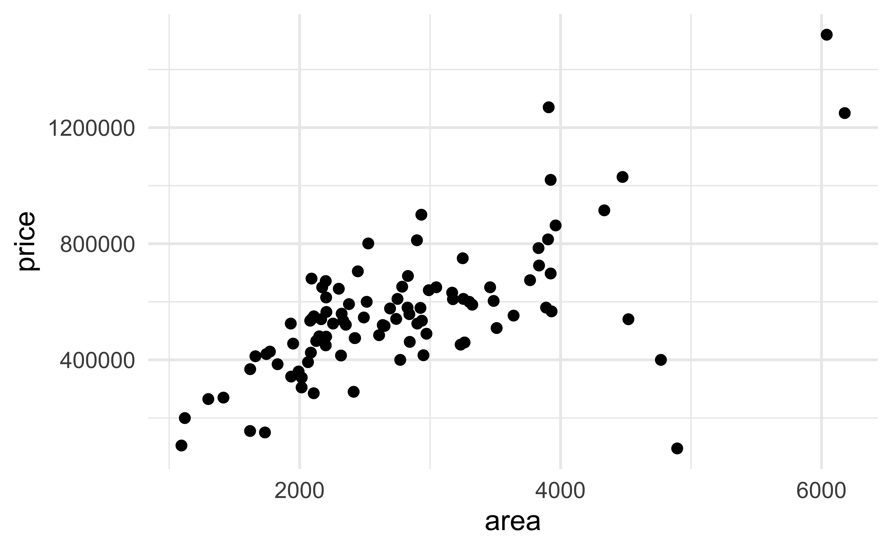
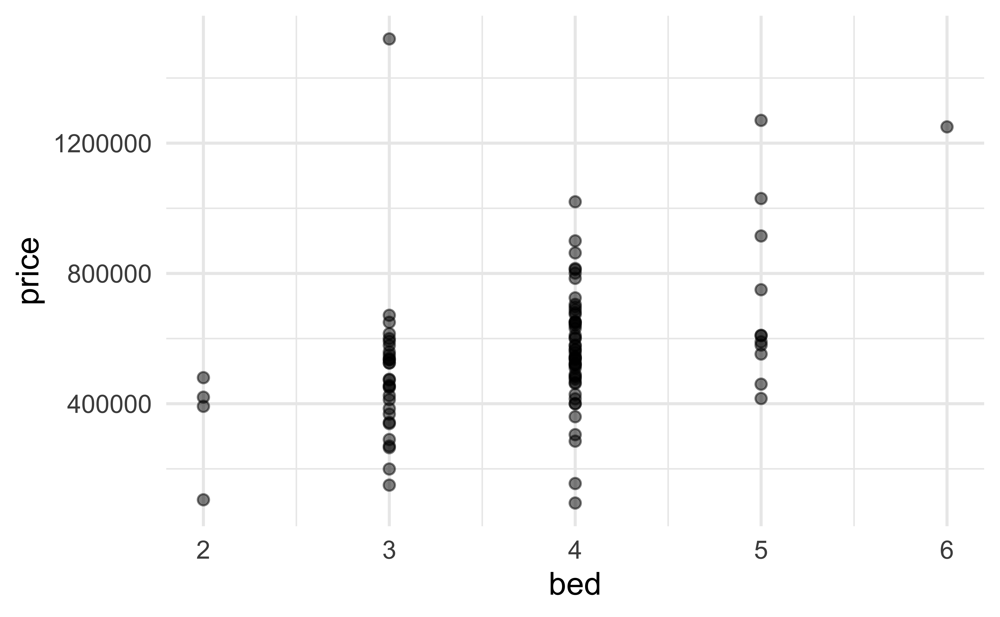
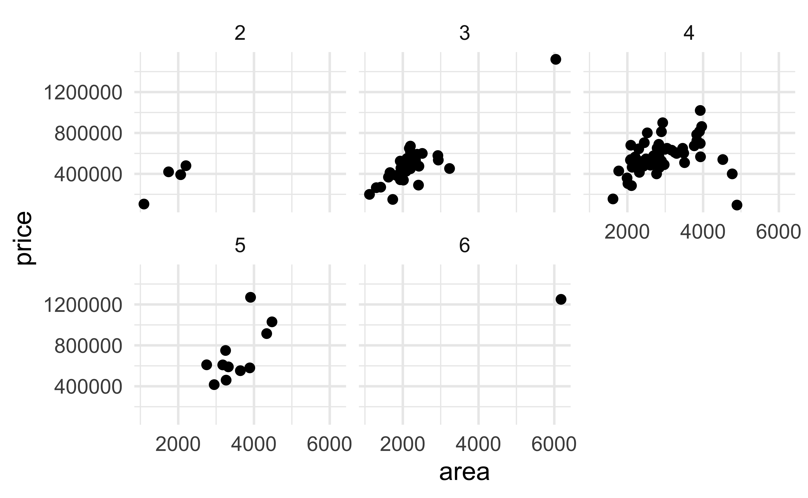

# load packages
library(tidyverse)
library(tidymodels)
library(ggdist)
library(ggthemes)
library(openintro)
# set theme for ggplot2
ggplot2::theme_set(ggplot2::theme_minimal(base_size = 16))
# set figure parameters for knitr
knitr::opts_chunk$set(
fig.width = 7, # 7" width
fig.asp = 0.618, # the golden ratio
fig.retina = 3, # dpi multiplier for displaying HTML output on retina
fig.align = "center", # center align figures
dpi = 300 # higher dpi, sharper image
)Visualizing uncertainty II
Lecture 13
Dr. Mine Çetinkaya-Rundel
Duke University
STA 313 - Spring 2026
Warm up
Announcements
Project 1 presentations tomorrow in lab – be there on time!
Project 1 peer feedback due on TEAMMATES – you’ll receive an email tomorrow at 8 am when it opens, fill it out after your presentation, by 5 pm on Friday
Setup
From last time
Life expectancy vs. log GDP per capita
In ae-08, create a visualization that shows the relationship between life expectancy and GDP per capita across continents and years, including error bars to represent uncertainty in the slope lstimates.

# Visualizing uncertainty of model estimates
Data: House prices in Duke Forest
# A tibble: 98 × 13
address price bed bath area type year_built heating cooling parking
<chr> <dbl> <dbl> <dbl> <dbl> <chr> <dbl> <chr> <fct> <chr>
1 1 Learned … 1.52e6 3 4 6040 Sing… 1972 Other,… central 0 spac…
2 1616 Pinec… 1.03e6 5 4 4475 Sing… 1969 Forced… central Carpor…
3 2418 Wrigh… 4.20e5 2 3 1745 Sing… 1959 Forced… central Garage…
4 2527 Sevie… 6.80e5 4 3 2091 Sing… 1961 Heat p… central Carpor…
5 2218 Myers… 4.29e5 4 3 1772 Sing… 2020 Forced… central 0 spac…
6 2619 Vesso… 4.56e5 3 3 1950 Sing… 2014 Forced… central Off-st…
7 1803 Woodb… 1.27e6 5 5 3909 Sing… 1968 Forced… central Carpor…
8 19 Learned… 5.57e5 4 3 2841 Sing… 1973 Heat p… central Carpor…
9 2827 Mcdow… 6.97e5 4 5 3924 Sing… 1972 Other,… central Covered
10 2709 Mcdow… 6.5 e5 3 2 2173 Sing… 1964 Forced… other 0 spac…
# ℹ 88 more rows
# ℹ 3 more variables: lot <dbl>, hoa <chr>, url <chr>Price vs. area
Price vs. bedrooms
Price vs. area + bedrooms
Data prep
- Remove 6 bedroom houeses
- Make
beda factor variable
# A tibble: 97 × 3
price area bed
<dbl> <dbl> <fct>
1 1520000 6040 3
2 1030000 4475 5
3 420000 1745 2
4 680000 2091 4
5 428500 1772 4
6 456000 1950 3
7 1270000 3909 5
8 557450 2841 4
9 697500 3924 4
10 650000 2173 3
# ℹ 87 more rowsFit a model
Interpret the slopes and the intercept. Then, describe what std.error in the output means.
# A tibble: 5 × 5
term estimate std.error statistic p.value
<chr> <dbl> <dbl> <dbl> <dbl>
1 (Intercept) 84433. 94534. 0.893 0.374
2 area 149. 23.0 6.47 0.00000000459
3 bed3 71305. 91393. 0.780 0.437
4 bed4 49319. 92366. 0.534 0.595
5 bed5 95113. 107503. 0.885 0.379 Let’s bootstrap!
Bootstrap samples
# A tibble: 48,500 × 14
resample address price bed bath area type year_built heating cooling
<int> <chr> <dbl> <fct> <dbl> <dbl> <chr> <dbl> <chr> <fct>
1 1 1601 Ande… 270000 3 3 1416 Sing… 1990 No Data other
2 1 1103 Ande… 525000 3 3 2256 Sing… 2016 Heat p… other
3 1 2703 Sevi… 475000 3 2 2425 Sing… 1961 Forced… other
4 1 2401 Perk… 550000 3 3 2109 Sing… 1953 Forced… central
5 1 2618 Pick… 412500 3 2 1661 Sing… 1941 Other,… other
6 1 147 Pinec… 600000 3 2.5 2514 Sing… 1934 Other other
7 1 2809 Mcdo… 525000 3 2 1932 Sing… 1978 Forced… central
8 1 2413 Perk… 385000 3 2 1831 Sing… 1951 Forced… central
9 1 2813 Mont… 540000 3 3 2165 Sing… 1983 Forced… central
10 1 2749 Dogw… 592000 3 2 2378 Sing… 1960 Forced… other
# ℹ 48,490 more rows
# ℹ 4 more variables: parking <chr>, lot <dbl>, hoa <chr>, url <chr>Bootstrap samples - another look
Rows: 48,500
Columns: 14
$ resample <int> 1, 1, 1, 1, 1, 1, 1, 1, 1, 1, 1, 1, 1, 1, 1, 1, 1, 1, 1, 1,…
$ address <chr> "1601 Anderson St, Durham, NC 27707", "1103 Anderson St, Du…
$ price <dbl> 270000, 525000, 475000, 550000, 412500, 600000, 525000, 385…
$ bed <fct> 3, 3, 3, 3, 3, 3, 3, 3, 3, 3, 3, 3, 3, 3, 3, 3, 3, 3, 3, 3,…
$ bath <dbl> 3.0, 3.0, 2.0, 3.0, 2.0, 2.5, 2.0, 2.0, 3.0, 2.0, 2.0, 3.0,…
$ area <dbl> 1416, 2256, 2425, 2109, 1661, 2514, 1932, 1831, 2165, 2378,…
$ type <chr> "Single Family", "Single Family", "Single Family", "Single …
$ year_built <dbl> 1990, 2016, 1961, 1953, 1941, 1934, 1978, 1951, 1983, 1960,…
$ heating <chr> "No Data", "Heat pump, Gas", "Forced air, Gas", "Forced air…
$ cooling <fct> other, other, other, central, other, other, central, centra…
$ parking <chr> "0 spaces", "Covered", "Carport, Covered", "Garage - Attach…
$ lot <dbl> 0.36, 0.24, 0.94, 0.61, 0.54, 0.69, 0.54, 0.29, 0.39, 0.75,…
$ hoa <chr> NA, NA, NA, NA, NA, NA, NA, NA, NA, NA, NA, NA, NA, NA, NA,…
$ url <chr> "https://www.zillow.com/homedetails/1601-Anderson-St-Durham…ae-09: Part 1
The following visualization shows bootstrap confidence intervals for predictions from additive (main effects) models for predicting price from area and number of bedrooms. Recreate the visualization. Once you’re done, share your code and plot on Slack in #general.

ae-09: Part 2
Construct and visualize bootstrap distributions of model estimates using halfeye plots, i.e., recreate the following visualization. Once you’re done, share your code and plot on Slack in #general. Then, try other stats (other ways of visualizing the distributions) from the ggdist package.


Further reading and acknowledgements
- Acknowledgements: Slides from Visualizing uncertainty by Claus Wilke
- Further reading
- Fundamentals of Data Visualization: Chapter 16: Visualizing uncertainty
- Data Visualization—A Practical Introduction: Chapter 6.6: Grouped analysis and list columns
- Data Visualization—A Practical Introduction: Chapter 6.7: Plot marginal effects
- ggdist reference documentation: https://mjskay.github.io/ggdist/index.html
- ggdist vignette: Frequentist uncertainty visualization